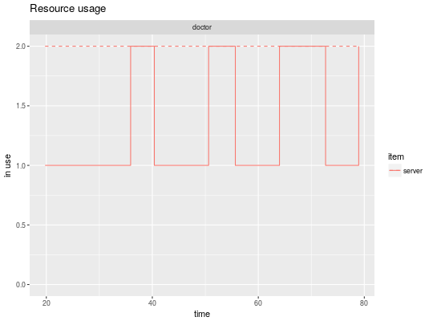
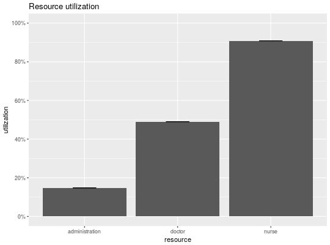
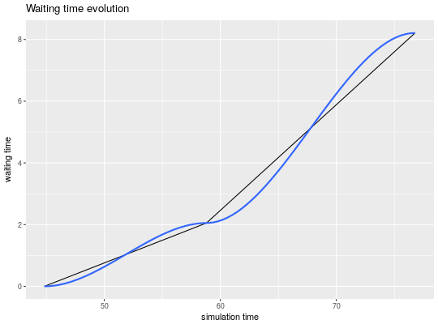

A method for the plot generic. There are three kinds of plots with different
metrics available:
# S3 method for simmer plot(x, what = c("resources", "arrivals", "attributes"), metric = NULL, ...)
c("resources", "arrivals", "attributes").what = "resources"c("usage", "utilization").what = "arrivals"c("activity_time", "waiting_time", "flow_time").what = "attributes"what = "resources"namesmetric = "usage"itemsc("system", "queue", "server").stepswhat = "attributes"Returns a ggplot2 object.
t0 <- trajectory("my trajectory") %>% ## add an intake activity seize("nurse", 1) %>% timeout(function() rnorm(1, 15)) %>% release("nurse", 1) %>% ## add a consultation activity seize("doctor", 1) %>% timeout(function() rnorm(1, 20)) %>% release("doctor", 1) %>% ## add a planning activity seize("administration", 1) %>% timeout(function() rnorm(1, 5)) %>% release("administration", 1) env <- simmer("SuperDuperSim") %>% add_resource("nurse", 1) %>% add_resource("doctor", 2) %>% add_resource("administration", 1) %>% add_generator("patient", t0, function() rnorm(1, 10, 2)) env %>% run(until=80)#> simmer environment: SuperDuperSim | now: 80 | next: 83.4753535957209 #> { Resource: nurse | monitored: 1 | server status: 1(1) | queue status: 2(Inf) } #> { Resource: doctor | monitored: 1 | server status: 2(2) | queue status: 0(Inf) } #> { Resource: administration | monitored: 1 | server status: 0(1) | queue status: 0(Inf) } #> { Generator: patient | monitored: 1 | n_generated: 9 }plot(env, what="resources", metric="usage", "doctor", items = "server", steps = TRUE)plot(env, what="resources", metric="utilization", c("nurse", "doctor", "administration"))plot(env, what="arrivals", metric="waiting_time")#>#> Warning: span too small. fewer data values than degrees of freedom.#> Warning: pseudoinverse used at 44.671#> Warning: neighborhood radius 14.133#> Warning: reciprocal condition number 0#> Warning: There are other near singularities as well. 328.89#> Warning: span too small. fewer data values than degrees of freedom.#> Warning: pseudoinverse used at 44.671#> Warning: neighborhood radius 14.133#> Warning: reciprocal condition number 0#> Warning: There are other near singularities as well. 328.89